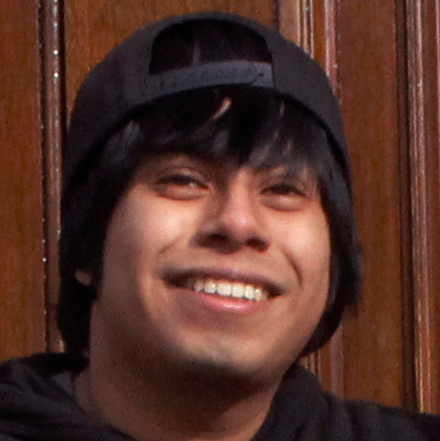

We Are
The Beach Episode
***Is something going here or not

The Beach Episode is made up of seven students currently studying at the Berklee College of Music in Boston, Massachusetts. Dan, Sean, Dakota, and Jody all met each other at Berklee's table top gaming club during their first week of freshman year. After talking about putting together a band that would focus on playing music from their favorite video games and anime, they reached out to a few of their friends and ultimately formed the group that makes up the band today. The goal of the band is to play interesting/original arrangements of video game and anime music for audiences at conventions and other venues.
Meet the Band
***What about here yay or nay
Dan - The Front Man
Virus
Dan ‘Danni Venus’ Vitullo is the frontman, video editor, and saxophonist for The Beach Episode; they’re from Mansfield, CT, and are currently studying Songwriting and Dance at Berklee College of Music. Their favorite games include Link Between Worlds, Kingdom Hearts 2, and Undertale. When the band made a League of Legends team, Dan became an Annie main. And, if you couldn’t tell, Dan is a big fan of Eevee.
 Sean - The Leader
Sean - The Leader
Aquiun
Sean Bonney-Burrill is a Guitarist/Drummer from Ithaca, New York. He is currently majoring in Contemporary Writing and Production at Berklee College of Music. He has been going to conventions and cosplaying for over 7 years and loves meeting new people from all fandom communities. As the oldest and wisest of all the members of The Beach Episode, he has defaulted to the band’s leader. Some of his favorite anime include Tengen Toppa Gurren Lagann, Samurai Champloo, Mushi-shi, and Nana. Some of his favorite video games are Borderlands 2, Mario Kart 8, and League of Legends (he always plays Miss Fortune).
 Dakota - The Flutist
Dakota - The Flutist
Aquapia
A military brat, Dakota Galley is the flutist for the Beach Episode. He’s lived all over the United States and Europe, and is currently settled in Boston with the rest of the band. Working towards a Bachelor’s of Music in Performance and a Minor in Instrumental Repair, Dakota has been playing flute for close to 11 years and has experience performing in a variety of styles. When it comes to Naruto, he’s probably one of the biggest fan boys out there. He’s a Sion main in League of Legends, and is currently practicing Zerg in Starcraft II.
 Jody - The Violinist
Jody - The Violinist
Taurra
Jody Miller is from Apex, North Carolina, and is the violinist and rehearsal manager for The Beach Episode. Since he’s been playing the violin since the 1st grade, it was only natural that he would work towards a Bachelor’s of Music in Performance from Berklee College of Music, and in his spare time enjoys a few games of Hearthstone. Among his favorite video games, noteworthy titles include Undertale and Borderlands 2. He also happens to be an avid consumer of the Welcome to Night Vale and The Adventure Zone podcasts.
 Alex - The Keyboardist
Alex - The Keyboardist
Taurmini
Alex LaCava is the keyboardist and arranger for The Beach Episode; he’s from Boston, Massachusetts, which naturally drew him towards seeking a degree in Composition from Berklee College of Music. He has an unnatural love for everything pasta, which has earned him the nickname “Meatball” within the band. When he’s not toting his iconic keytar on stage, he can be found awkwardly running from Skeevers in Skyrim. Though he used to play Dota II, the band convinced him to reform and he has begun playing League of Legends occasionally.
 Devlin - The Bassist
Devlin - The Bassist
Unknown
Devlin McDermott is the mysterious bassist and baritone saxophonist for The Beach Episode. Originally from Valley Cottage, NY, (so he says), he now appears once in a blue moon only to shred bass in Beach Episode Rehearsals. He’s studying for a Bachelor’s of Music in Film Scoring with a Minor in Video Game Scoring from Berklee College of Music. His favorite anime is Gurren Lagann, and his favorite games include the Fire Emblem series and Persona 5.
 Yusuf - The Drummer
Yusuf - The Drummer
Arlo
Yusuf Roshd is the handsomest and the newest member of The Beach Episode. He’s also the only international member of the band, originally hailing from Richmond Hills, Ontario, Canada. He’s studying for a Bachelor’s of Music in Performance and a Minor in Conducting at Berklee College of Music. Some of his favorite anime include Full Metal Alchemist and Re:Zero, and Red Dead Redemption and Metal Gear Solid 4 are among his favorite games. Though he used to play League of Legends frequently, he has since switched to competitive Overwatch.